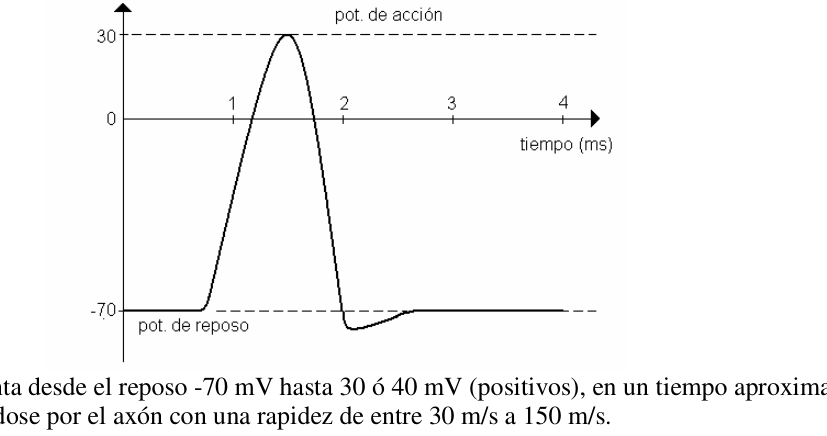

PT54 Axon como capacitor (sistema nervioso)
PT54. Rosario, Santa Fe. Verde
No se pongan nerviosos!!!!!…
El sistema nervioso en seres humanos y animales superiores es tan complejo, que nos permite conectarnos con el mundo, comunicar las diferentes partes del cuerpo, gobernar nuestros músculos.
Sabemos que se transmiten mensajes a través de este sistema por señales eléctricas que van atravesando a las neuronas (que son células muy particulares, formadoras del sistema nervioso). El pasaje de la señal eléctrica desde o hacia la neurona se llama sinapsis.
Pero: ¿Cómo y cuándo ocurre la transmisión? En casi todas las células y por supuesto en las neuronas, existe una carga neta positiva en la superficie exterior de la membrana celular y una carga negativa en la superficie interior; implicando una diferencia de potencial entre ambos lados de dicha membrana. Cuando la neurona no transmite señal, la diferencia de potencial será el llamado Potencial de reposo y está relacionado con la concentración de iones dentro y fuera de la membrana. Los iones más comunes son: K+ ; Na+ ; Cl-, cuya concentración habitual en el equilibrio es:
ión Concentración dentro del axón, Cd (mol/m3) Concentración fuera del axón, CF (mol/m3) K+ 140 5 Na+ 15 140 Cl- 9 125
A causa de la diferencia de concentración, los iones tienden a difundirse a través de la membrana. Dentro de la célula existe mayor concentración de K+ y tiende a difundirse hacia fuera, y con el Cl- ocurre lo contrario. Ambos iones luego de atravesar la membrana (o pared del axón) quedan en sus superficies, formando una doble capa cargada a ambos lados y atrayéndose a través de ella. (dentro negativa y fuera positiva)
Cuando la diferencia de concentración queda compensada con la diferencia de potencial, cesa el fenómeno de difusión y se alcanza el equilibrio; esta relación se expresa en la Ecuación de Nernst: d f f d C C e Z T k V V V log . . 3,2
−
(potencial de reposo)
Siendo:
V. diferencia de potencial entre el interior (dentro) y el exterior (fuera) de la membrana celular
Vd : potencial dentro de la célula
Vf : potencial fuera de la célula
k: constante de Boltzman = 1,38.10-23 J/K
T: temperatura absoluta (K)
Z: número de oxidación con el que interviene el ión en el intercambio (cantidad de carga del ión)
e: carga elemental del electrón = 1,6.10-19 C
Cd: concentración del ión considerado dentro de la célula (neurona)
Cf: concentración del ión considerado fuera de la célula
Esta ecuación es válida para los iones mencionados y que figuran en la tabla.
“Se encontró: que los K+ difunden hacia fuera y los Na+ hacia dentro” La importancia de las neuronas reside en que pueda conducir señales eléctricas a través de ella cuando recibe algún estímulo (térmico, químico, eléctrico, diferencia de presión, luz). Cuando el estímulo supera un cierto umbral, se propaga (por el axón) un pulso de tensión, y se denomina Potencial de acción.
El potencial aumenta desde el reposo -70 mV hasta 30 ó 40 mV (positivos), en un tiempo aproximado de 1 ms, propagándose por el axón con una rapidez de entre 30 m/s a 150 m/s. La magnitud del potencial de acción es independiente de la intensidad del estímulo; la neurona “se dispara” o no. Un estímulo más intenso no da lugar a un potencial de acción mayor; sino que origina más pulsos; uno detrás del otro. Pero ¿qué es lo que origina el potencial de acción? Aparentemente, la membrana celular modifica su permeabilidad en el punto donde recibe un estímulo y deja penetrar iones Na+ bruscamente hacia el interior de la célula, adquiriendo allí, cargas positivas momentáneamente. Hacia esta región interna con cargas positivas se sienten atraídas las negativas, vecinas, también del interior de la membrana, desplazándose las positivas hacia derecha e izquierda; pero sigamos, por ej. a la derecha como muestra la figura, y a lo largo del axón, produciendo la transmisión.
Podemos luego de esta descripción tratar al axón (cuando está en acción) como si fuese un capacitor.
¡Y ahora; a resolver!
-
¿Cuál es la intensidad del campo eléctrico en la membrana de un axón de 1.10-8 m de grosor si el potencial de reposo es -70 mV?
-
Si la concentración de K+ fuera del axón fuese de 5 mol/m3, ¿cuál será la concentración del K+ dentro del axón si el potasio estuviera en equilibrio, con el mismo potencial de reposo del ítem anterior, y la temperatura del organismo de 37ºC.
-
Si se estimula este axón (o nervio) con un pulso eléctrico, y el potencial de acción se detecta en un punto situado 0,034 mm más abajo en el axón 0,0052 ms más tarde. Cuando se detecta el potencial de acción a 0,072 mm, el tiempo total transcurrido es 0,0063 ms. ¿Cuál es la velocidad del pulso eléctrico a lo largo del axón?
-
A- Si el axón, considerado cilíndrico, tiene 0,1 mm de longitud, 1µm (1.10-6m) de radio: el grosor de la membrana es 1.10-8 m aproximadamente, y la constante dieléctrica vale
- ¿Cuál será su capacidad? B- ¿Qué cantidad de carga podrá desplazarse a consecuencia de un potencial de acción (entre -70 mV y 30 mV). ε0 = 8,85.10-12 C2/ N m2 Área del cilindro: 2πrl
-
A- ¿Cuánta energía es necesaria para transmitir un potencial de acción a lo largo del axón del ítem anterior? Sugerencia: 1 pulso es equivalente a cargar y descargar la capacidad del axón. B- ¿Qué potencia media mínima se necesita para que 104 neuronas transmitan 100 pulsos por segundo?
-
Durante la aplicación del potencial de acción, penetra Na+ en la célula a razón de unos 3.10-7
mol/m2.s ¿Cuánta potencia debe generar el sistema de transporte activo para originar esta circulación contra una diferencia de potencial de +30 mV? Suponer el mismo axón anterior de 0,1 mm de longitud, pero con 1.10-8 m de diámetro y cilíndrico. N0= 6,023.1023 (número de Avogadro) Recordar:
B A B A log log log − =

Topic: Electrostatics, Biology Metodi: Electric Potential Method, Coulomb’s Law Competenze: Physical Reasoning Objects: Capacitor Fonte: Testo (PDF) — p.1
PT54 Axon come capacitore (sistema nervoso)
PT54. Rosario, Santa Fe. Verde
Non siate nervosi!!!!!…
Il sistema nervoso in esseri umani e animali superiori è così complesso che ci permette di connetterci con il mondo, comunicare le diverse parti del corpo, governare i nostri muscoli.
Sappiamo che i messaggi vengono trasmessi attraverso questo sistema da segnali elettrici che vanno attraverso i neuroni (che sono cellule molto particolari, che formano il sistema nervoso). El Il passaggio del segnale elettrico da o verso il neurone è chiamato sinapsi.
Ma come e quando si trasmette? In quasi tutte le cellule e naturalmente nei neuroni, c’è una carica netta positiva sulla superficie. La presenza di una carenza negativa sulla superficie interna della membrana cellulare, che implica un differenze di potenziale tra i due lati di tale membrana. Quando il neurone non trasmette il segnale, la differenza di potenziale sarà chiamata potenziale di riposo e è legato alla concentrazione di ioni dentro e fuori la membrana. Gli ioni più comuni sono: K+ ; Na+ ; Cl-, la cui normale concentrazione in equilibrio è:
Ione Concentramento all’interno di un’azione, Cd (mol/m3) Concentratene fuori. di un’azione, CF (mol/m3) K+ 140 5 Na+ 15 140 Cl- 9 125
A causa della differenza di concentrazione, gli ioni tendono a diffondersi attraverso la membrana. All’interno della cellula c’è una maggiore concentrazione di K+ e tende a diffondersi verso l’esterno, e con il Cl- E’ il contrario. Entrambi gli ioni, dopo aver attraversato la membrana (o il muro dell’ assione), rimangono in loro. superfici, formando un doppio strato caricato su entrambi i lati e attraendo attraverso di esso. (all’interno) Negativo e positivo)
Quando la differenza di concentrazione è compensata dalla differenza di potenziale, cessa il Il fenomeno di diffusione e si raggiunge l’equilibrio; questo rapporto si esprime nell’Equatoria di Nernst: d f f d C C e Z T k V V V log . . 3,2
−
(potenzialmente di riposo) Essendo: V. differenza di potenziale tra l’interno (dentro) e l’esterno (esterno) della membrana cellulare Vd: potenziale all’interno della cellula Vf: potenziale fuori cellulare k: costante di Boltzman = 1,38,10-23 J/K T: temperatura assoluta (K) Z: numero di ossidazione con cui l’ion si interviene nello scambio (quantità di carico dell’ion) e: carico elementare dell’elettrone = 1,6.10-19 C Cd: concentrazione dell’ion considerato all’interno della cellula (neurone) Cf: concentrazione dell’ion considerato fuori cellula
Questa equazione vale per gli ioni menzionati e riportati nella tabella.
Si è trovato: che i K+ diffondono verso l’esterno e i Na+ verso l’interno L’importanza dei neuroni è che possono condurre segnali elettrici attraverso di esso quando riceve uno stimolo (termale, chimico, elettrico, differenza di pressione, luce). Quando lo stimolo supera un certo limite, si diffonde (per l’asse) un impulso di tensione, e si Il potenziale di azione.
Il potenziale aumenta dal -70 mV di riposo a 30 o 40 mV (positivi), in un tempo approssimativo di 1 ms, che si diffonde per l’asse a velocità compresa tra 30 m/s e 150 m/s. La grandezza del potenziale di azione è indipendente dall’intensità dello stimolo; il neurone se
- Sparare o no. Un stimolo più intenso non produce un maggiore potenziale di azione; invece, genera più impulsi; uno dietro l’altro. Ma cosa è che crea il potenziale di azione? Apparentemente, la membrana cellulare modifica la sua permeabilità al punto in cui riceve uno stimolo. e lascia che gli ioni Na+ penetrino bruscamente verso l’interno della cellula, acquisendo lì cariche positive.
- In un momento. A questa regione interna con carichi positivi si sentono attirati i negativi, i vicini, anche del La parte interna della membrana, spostando i positivi a destra e a sinistra; ma continuiamo, per esempio. a a destra come mostra la figura, e lungo l’asse, producendo la trasmissione.
Possiamo trattare l’axon (quando è in azione) come un capacitore.
E ora, risolvere!
-
Qual è l’intensità del campo elettrico nella membrana di un asse di 1,10-8 m di spessore se Il potenziale di riposo è -70 mV?
-
Se la concentrazione di K+ fuori dell’axo fosse di 5 mol/m3, qual sarà la concentrazione di K+ all’interno dell’asse se il potassio fosse in equilibrio, con lo stesso potenziale di riposo di Il numero di persone che hanno un’attività fisica non è più di 30 °C.
-
Se questo asse (o nervo) viene stimato con un impulso elettrico, e il potenziale di azione viene rilevato a un punto situato 0,034 mm più in basso sull’asse 0,0052 ms dopo. Quando viene rilevato il potenziale di azione a 0,072 mm, il tempo totale trascorso è di 0,0063 ms. Qual è la velocità del polso elettrico lungo l’asse?
-
A- Se l’axo, considerato cilindrico, è di 0,1 mm di lunghezza, 1μm (1,10-6m) di radius: il grosso della membrana è di circa 1,10-8 m, e la costante dielettrica vale
- Qual è la sua capacità? B- Quanti carichi possono essere spostati in seguito a un potenziale di azione (tra -70 mV y 30 mV). ε0 = 8,85.10-12 C2/ N m2 Area del cilindro: 2πrl
- A- Quanta energia è necessaria per trasmettere un potenziale di azione lungo l’asse del
- E’ stato prima? Suggerimento: 1 polso equivale a caricare e scaricare la capacità dell’asse. B- Che potenza media minima è necessaria per 104 neuroni a trasmettere 100 pulsi al giorno? Secondo?
- Durante l’applicazione del potenziale di azione, Na+ penetra nella cellula a un tasso di circa 3.10-7. Mol/m2.s Quanta potenza deve generare il sistema di trasporto attivo per generare questa potenza circolazione contro un differenziazione di potenziale di +30 mV? Supponiamo lo stesso asse precedente di 0,1 mm di lunghezza, ma con diametro di 1,10-8 m e cilindrico. N0 = 6.023.1023 (numero di Avogadro) Ricordate: B A B A log log log − =
Topic: Electrostatics, Biology Metodi: Electric Potential Method, Coulomb’s Law Competenze: Physical Reasoning Objects: Capacitor Fonte: Testo (PDF) — p.1
The following table shows the results of the tests:
PT54. Rosario, Santa Fe. Green .
Don’t get nervous about it!!!!!
The nervous system in humans and higher animals is so complex, it allows us to connect with the world, communicate with different parts of the body, govern our muscles.
We know that messages are transmitted through this system by electrical signals that go It’s going through neurons (which are very particular cells, forming the nervous system). El The passage of an electrical signal from or to the neuron is called synapse.
But how and when does transmission occur? In almost every cell and of course in neurons, there is a net positive charge on the surface. The cell membrane outside and a negative charge on the inner surface; implying a potential difference between the two sides of that membrane. When the neuron doesn’t transmit a signal, the potential difference will be called the resting potential and It’s related to the concentration of ions inside and outside the membrane. The most common ions are: K+ ; Na+ ; Cl-, the usual concentration in equilibrium of which is:
I ‘m not . Concentration within . The axon, Cd (mol/m3) Concentration outside . The axon, CF (mol/m3) K+ 140 5 Na+ 15 140 Cl- 9 125
Because of the concentration difference, the ions tend to spread through the membrane. Within the cell there is a higher concentration of K+ and it tends to spread outward, and with the Cl- The opposite happens. Both ions after passing through the membrane (or axon wall) remain in their The surface of the material is a double layer, loaded on both sides and attracted through it. (within) negative and positive)
When the concentration difference is offset by the potential difference, the The resulting effect is the diffusion phenomenon and the equilibrium is reached; this relationship is expressed in the Nernst equation: d f f d C C e Z T k V V V log . . 3,2
−
(potential rest) Being: V. potential difference between the inside (inside) and outside (outside) of the cell membrane Vd: potential within the cell Vf: potential outside the cell The following is the list of the values of the values of the values of the values of the values of the values of the values of the values of the values of the values of the values of the values of the values of the values of the values of the values of the values of the values of the values of the values of the values of the values of the values of the values of the values of the values of the values of the values of the values of the values of the values of the values of the values of the values of the values of the values of the values of the values of the values of the values of the values of the values of the values of the values of the values of the values of the values of the values of the values of the values of the values of the values of the values of the values of the values of the values of the values of the values of the values of the values of the values of the values of the values of the values of the values of the values of the values of the values of the values of the values of the values of the values of the values of the values of the values of the values of the values of the values of the values of the values of the values of the values of the values of the values of the values of the values of the values of the values of the values of the values of the values of the values of the values of the values of the values of the first paragraph. T: absolute temperature (K) Z: number of oxidation at which the ion is involved in the exchange (ion load quantity) e: elementary charge of the electron = 1,6.10-19 C Cd: concentration of the ion considered within the cell (neurone) Cf: concentration of the ion considered outside the cell
This equation is valid for the ions mentioned and shown in the table.
It was found that the K+ spread out and the Na+ spread inwards The importance of neurons lies in the fact that they can conduct electrical signals through it when they are It receives some stimulus (thermal, chemical, electrical, pressure difference, light). When the stimulus exceeds a certain threshold, a pulse of tension is propagated (by the axon), and it is It’s called the action potential.
The potential increases from rest -70 mV to 30 or 40 mV (positive) in approximately one time 1 ms, propagating along the axon at a speed of between 30 m/s and 150 m/s. The magnitude of the action potential is independent of the intensity of the stimulus; the neuron se Shoot or not. A more intense stimulus does not lead to a greater action potential; rather it generates more pulses; One after the other. But what is the source of the action potential? Apparently, the cell membrane changes its permeability at the point where it receives a stimulus. And it lets Na+ ions penetrate abruptly into the cell, acquiring positive charges there. temporarily. To this internal region with positive charges are attracted the negative ones, neighbours, also of the The positive side of the membrane is shifted to the right and left, but let’s go on, for example. a Right as shown in the figure, and along the axon, producing the transmission.
We can then treat the axon (when it’s in action) as if it were a capacitor.
And now, to settle!
-
What is the electric field intensity in the membrane of an axon of 1.10-8 m thickness if The resting potential is -70 mV?
-
If the concentration of K+ outside the axon was 5 mol/m3, what will be the concentration of K+ Within the axon if the potassium was in equilibrium, with the same resting potential as The body temperature is 37°C.
-
If this axon (or nerve) is stimulated with an electrical pulse, and the action potential is detected at a point 0,034 mm below the axis 0,0052 ms later. When detected The action potential at 0,072 mm, total time elapsed is 0,0063 ms. What is the the speed of the electrical pulse along the axon?
-
A- If the axon, considered cylindrical, is 0.1 mm long, 1μm (1.10-6m) of radius: the thickness of the membrane is approximately 1.10-8 m, and the dielectric constant is
- What will be its capacity? B- What amount of cargo may be displaced as a result of an action potential (between -70 mV y 30 mV). ε0 = 8,85.10-12 C2/ N m2 The cylinder area: 2πrl
-
A- How much energy is needed to transmit an action potential along the axis of the Previously on “Item”? Suggestion: 1 pulse is equivalent to the load and discharge capacity of the axon. B- What is the minimum mean power required for 104 neurons to transmit 100 pulses per second? Second?
-
During the application of the action potential, Na+ penetrates the cell at a rate of about 3.10-7. mol/m2.s How much power must the active transport system generate to generate this circulation against a potential difference of +30 mV? Suppose the same axis of 0.1 mm of length but with a diameter of 1.10-8 m and cylindrical. N0 = 6,023.1023 (Avogadro number) Remember: B A B A log log log − =
Topic: Electrostatics, Biology Metodi: Electric Potential Method, Coulomb’s Law Competenze: Physical Reasoning Objects: Capacitor Fonte: Testo (PDF) — p.1